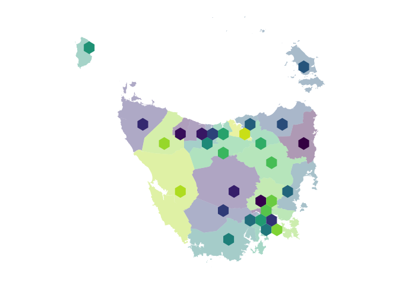
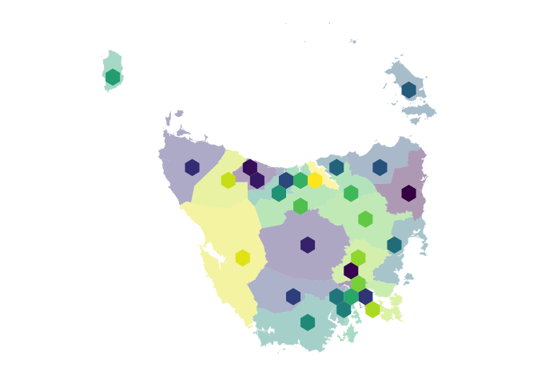

The sugarbag package creates tessellated hexagon maps for visualising geo-spatial data. Hexagons of equal size are positioned to best preserve relationships between individual areas and the closest focal point, and minimise distance from their actual location. This method provides an alternative to cartograms that allows all regions to be compared on the same visual scale.
Maps containing regions with a few small and densely populated areas are extremely distorted in cartograms. An example of this is a population cartogram of Australia, which distorts the map into an unrecognisable shape. The technique implemented in this package is particularly useful for these regions.
Installation
You can install the CRAN release version of sugarbag from CRAN with:
install.packages("sugarbag")You can install the development version from GitHub using:
install.packages("remotes")
remotes::install_github("srkobakian/sugarbag")Getting started
There are two ways of creating hexagon maps using sugarbag:
- Use
geom_sugarbag(); OR - Assemble the map manually.
Both methods are outlined below. geom_sugarbag() is easier but less customisable than assembling the map manually.
We show how to create a map of Tasmania using each method. Tasmania is the southern-most state of Australia, consisting of one large land mass and several smaller islands. We will use the Australian Bureau of Statistics’ ESRI shape files to build our map. The shapefile has been filtered to contain only Tasmania.
The package contains these shapefiles of Tasmania - tas_lga for local government areas, and tas_sa2 for ABS Statistical Area Level 2 - for example purposes.
Making a map with geom_sugarbag()
The geom_sugarbag() function provides a simplified way to make sugarbag tesselated hexagon maps. Here’s an example:
tas_lga %>%
ggplot(aes(fill = lga_code_2016)) +
geom_sf(alpha = 0.4, linewidth = 0) +
geom_sugarbag(aes(geometry = geometry)) +
scale_fill_viridis_d() +
theme_map() +
theme(legend.position = "none", aspect.ratio = 1)
Note that we first create a standard geom_sf() layer. This displays the actual polygons in the data, over which we lay the hexagons using geom_sugarbag().
All you need for geom_sugarbag() is an SF dataframe - a dataframe of class “sf” that contains a geometry column that describes polygons. geom_sugarbag() will handle the process of converting those polygons to hexagons and placing them in the appropriate place.
Making a manual sugarbag map
geom_sugarbag() (above) provides a streamlined way of making hexagon maps. But it is less configurable than making the sugarbag maps manually.
To make a sugarbag map manually, there are four key steps:
- Calculate the centroid of each polygon in your data;
- Create a grid of possible locations for the hexagons to be placed on your map;
- Allocate each polygon to one of the possible hexagon locations;
- Visualise the results, typically using
geom_polygon().
These steps are outlined below.
Calculate centroids from polygons
The function create_centroids finds the central points of the polygons provided as an argument.
# Find the longitude and latitude centroid for each region or area
centroids <- create_centroids(tas_lga, "lga_code_2016")Create grid of possible hexagon locations
To tessellate correctly, all the hexagons must be evenly spaced. This function creates a grid of possible locations for the polygons.
grid <- create_grid(centroids = centroids, hex_size = 0.2, buffer_dist = 1.2)The sugarbag package operates by creating a grid of possible hexagons to allocate electorates. The buffer extends the grid beyond the geographical space, this is especially useful for densely populated coastal areas or cities, such as Brisbane and Sydney in this case, Hobart.
Allocate polygon areas to hexagon locations
Each polygon centroid will be allocated to the closest available hexagon grid point. The capital cities data set will be used to preserve neighbourly relationships. The allocate function requires two inputs, the centroids and the grid.
# Allocate the centroids to the hexagon grid
# We have the same amount of rows, as individual regions
hex_allocated <- allocate(
centroids = centroids,
hex_grid = grid,
hex_size = 0.2, # same size used in create_grid
hex_filter = 3,
focal_points = capital_cities,
width = 30,
verbose = TRUE
)The function fortify_hexagon assists in plotting. We now have 6 points per region, one for each point of a hexagon. Connecting these points will allow actual hexagons to be plotted.
The additional demographic information or data can now be added. This can be used to allow plots to be coloured by region.
Visualise
hexagons <- fortify_hexagon(data = hex_allocated, sf_id = "lga_code_2016", hex_size = 0.2)
polygons <- fortify_sfc(tas_lga) %>%
mutate(poly_type = "geo")
ggplot(mapping = aes(fill = lga_code_2016)) +
geom_polygon(data = polygons,
aes(x=long, lat,
group = interaction(lga_code_2016, polygon)),
alpha = 0.4) +
geom_polygon(data = hexagons,
aes(x=long, lat,
group = interaction(lga_code_2016))) +
scale_fill_viridis_d() +
theme_map() +
theme(legend.position = "none", aspect.ratio = 1)
For animations to move between geography and hexagons the sf_id must match, there also needs to be an identifier to separate the states to animate between for gganimate.